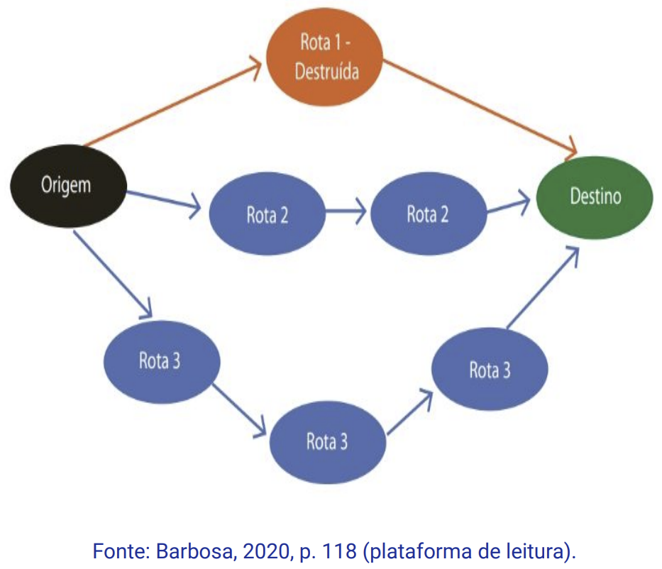
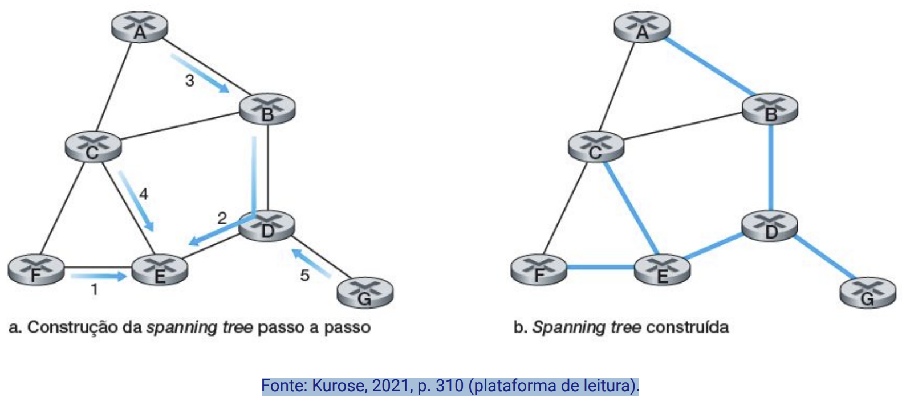
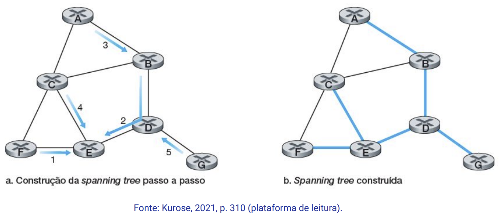

Disciplinas
INFRAESTRUTURA PARA SISTEMAS DE SOFTWARE Concluído
Materiais
Vídeo 1 - [UFMS Digital] Infraestrutura para Sistemas de Software - Módulo 3 - Unidade 1 - O conceito de roteamento de pacotes e os seus algoritmos sendProf.° ministrante: Carlos Alberto da Silva
Conteúdo
O conceito de roteamento de pacotes e os seus algoritmos
- Conceito de Roteamento
- Tipos de Roteamento
- Protocolos de Roteamentos (algoritmos)
Conceito de Roteamento
Protocolo de Roteamentoé o mecanismo como os roteadores encaminham pacotes.
- Para realizar esta função um roteador precisa de:
- ter o endereço de destino do pacote;
- conhecer os roteadores vizinhos;
- e manter atualizadas as tabelas de roteamento:
- com as rotas das redes internas ou externas
Tabelas de roteamento definem as rotas para encaminhar os pacotes corretamente em direção ao destino final:
- Rotas internas - atuam na rede privada (intranet);
- Rotas externas - atuam na rede mundial (internet).
- os roteadores de provedores de internet
Modelo abstrato de grafo de uma rede de computadores
 Plano de controleAlgoritmo de roteamento
Plano de dadosTabelas de roteamento

Tipos de roteamento.
Protocolos de redes internasAtuam dentro de uma rede privada (intranet, ou intra-domínio, ou Interior Gateway Protocol (IGP)) podendo ser:
- Vetor de distâncias:
- Routing Information Protocol (RIP)
- Estado de enlace (Link State):
- Open Shortest Path First Protocol (OSPF)
Atuam na rede mundial (internet) e são utilizados entre roteadores de diferentes provedores podendo ser:
- Exterior Gateway Protocol (EGP);
- Border Gateway Protocol (BGP);
Funções básicas de um protocolo de roteamento:
- Preencher as tabelas de roteamento com rotas para todas as sub-redes.
- Escolher a melhor rota quando houver mais de uma.
- Remover rotas da tabela de roteamento quando não forem mais válidas.
- Evitar loops de roteamento.

- Os algoritmos de roteamento trocam informações de suas tabelas de roteamentos com os roteadores vizinhos:
- Calculando as rotas pelos parâmetros:
- menor custo;
- menor distância;
- velocidade do enlace;
- outros.
Protocolos de Roteamentos (algoritmos)
Vetor de distâncias Routing Information Protocol (RIP)
É um protocolo de roteamento para determinar a rota de menor custo para uma rede de destino
- onde os roteadores trocam informações de roteamento referente às medidas de distância dos destinos alcançáveis.
Este protocolo atualiza uma tabela de roteamento com as rotas válidas registrando:
- um número de sub-rede;
- a interface pela qual os pacotes serão encaminhados;
- o endereço IP do próximo roteador alcançável.
No RIP, o cálculo das melhores rotas é baseado apenas no número de saltos entre roteadores dentro do seu domínio:
- É limitada a 15 saltos;
- ⇒ Ideal para redes de pequeno a médio porte.
Roteadores RIP trocam atualizações de roteamento a cada 30 segundos:
- Transmitindo a tabela de roteamento para todos os vizinhos.
- RIPv1 é um protocolo de roteamento classful que não oferece suporte a sub-redes;
- RIPv2 suporta VLSM e CIDR (máscaras de sub-rede).
⇒ Este protocolo pode apresentar problemas de convergência.
Estado de enlace (Link State) Open Shortest Path First Protocol (OSPF)Definido pela RFC 2328:
- Amplamente utilizado em IPv4 e IPv6.
Algoritmo de caminho mais curto (algorithm shortest path first):
- Algoritmo de Dijkstra, 1959.
Open Shortest Path First Protocol (OSPF)
- Suporte um grande número de roteadores:
- Utiliza o custo da largura de banda da interface para calcular as rotas mais curtas.
Suporta Variable Length Subnet Masking (VLSM):
- Criação de sub-redes de tamanhos variáveis;
- Melhorando a utilização dos endereços IP.
- Tempo de convergência rápido.
É escalável:
- Preferido dos provedores de serviços de Internet e redes empresariais.
Vantagens:
- Reduz o tamanho da base de dados das rotas;
- Minimiza o tráfego de roteamento.
- Faz Agregação de rotas para endereços IP hierárquico.
Exemplo:
destino 223.1 (alcança todos).
 Border Gateway Protocol (BGP)
Border Gateway Protocol (BGP)
É um protocolo de roteamento escalável e flexível usado entre Sistemas Autônomos (AS-AS).
⇒ Preferido por provedores de serviços de Internet.
- É um protocolo de vetor de distâncias.
- Considera o caminho completo até o destino:
- Não apenas o estado local do enlace (link)
- Os roteadores BGP trocam informações de roteamento:
- Incluindo prefixos de rede;
- Número do Sistema Autônomo (ASN) associado a cada prefixo.
- É um protocolo de roteamento Exterior Gateway Protocol (EGP) desenvolvido pela Cisco Systems®:
- utiliza o algoritmo de atualização por difusão.
Algoritmo por Difusão
- É um protocolo de roteamento híbrido combinando:
- Estado de enlace (convergência rápida);
- Vetor de distância (baixa sobrecarga de processamento e largura de banda).
- Para calcular as rotas, permite o balanceamento de carga em caminhos redundantes usando:
- Largura de banda;
- Latência;
- Confiabilidade;
- Carga do enlace.
- É um protocolo de estado de enlace para roteamento de intradomínio (IGP):
- utiliza o algoritmo de Dijkstra para calcular as rotas de menor custo.
⇒ roteadores vizinhos trocam informações sobre o estado dos enlaces.
- Os roteadores calculam as rotas mais curta para cada destino com base nessa topologia.
- Registrando em um banco de dados:
- topologia;
- custo;
- destino.
- Suporta endereços IPv4 e IPv6;
- É similar ao do protocolo OSPF.
Referências:
BARBOSA, Cynthia S.; SERPA, Matheus S.; OLIVEIRA, Diego B.; SARAIVA, Maurício O. Arquitetura TCP/IP I. Editora Grupo A, 2020. p. 15-17. ISBN 9786556900766. Disponível na Biblioteca Digital da UFMS.
KUROSE, Jim; ROSS, Keith W. Redes de Computadores e a Internet: uma Abordagem Top-down, 8 Edição. Editora Pearson, 2021. ISBN: 9788582605592. p. 273, 303-328. Disponível na Biblioteca Digital da UFMS.
TANENBAUM, Andrew S.; FEAMSTER, Nicholas; WETHERALL, David J.; Redes de Computadores, 6ª Edição. Editora Pearson, 2021. ISBN: 9788582605615. p. 236-251. Disponível na Biblioteca Digital da UFMS.